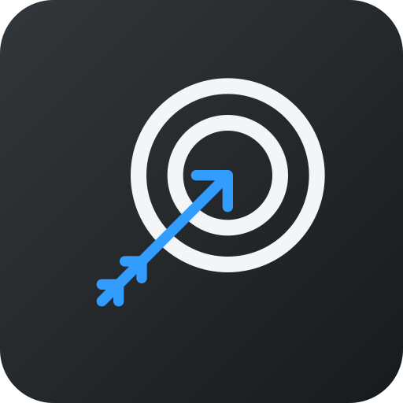

Design systemv0.2 · draft for review · 16 Nov 2026
Power BD
The look of the BD app: Notion's calm workspace in Powerhouse's colours, for leads,
funding, investors, organisations, company decisions and the playbook. Every token, icon
and component here is the one the app uses. Light and dark are both first-class: the app
follows the theme chosen in Connect, and every value below has a light and a dark version.
All names, organisations and figures on this page are invented.
Principles
Content first, quiet chrome
White or near-black pages, slate grey text, hairline borders. Shadows only where something floats.
Powerhouse, quietly
Slate neutrals and a charcoal primary from the Powerhouse brand. Powerhouse blue is for links, focus and "in progress". The brand gradient marks only the agent.
Colour carries meaning
Nine tones mark status: grey not started, blue in progress, purple waiting on them, yellow needs a decision, orange needs attention, green done well, red failed or overdue, brown paused.
Never colour alone
Every tag has its label and every warning its icon and reason, so the app reads the same without colour.
Calm density
A 4 px grid, 14 px text, 30–34 px rows. Dense enough for a pipeline, never cramped.
Show what a person must do
Actions only a person may take carry the person-check mark, and confidential items always carry the lock.
Six minds
Every screen is designed against the six ways people experience a product (John Whalen, Design for How People Think). The audit, the three concepts we weighed and the lexicon are in COGNITIVE-AUDIT.md. This is what each mind asks of Power BD.
Vision
One anchor per screen: the attention panel on the overview, the Next bar on a record. Anything slipping shows its reason in red or orange, which you can spot without reading. Everything else stays quiet.
Wayfinding
The sidebar is the map and breadcrumbs the path. A status path shows where a record is on its journey. A record opens as a side peek, so the list stays where it was.
Memory
What Notion and CRMs taught people: changes save by themselves and the page says so, search is top right on ⌘K, settings is a gear, deleting is a bin, and undo follows a removal.
Language
The team's own BD words, never the software's. Summaries first. Sources, checked dates and history sit one click deeper.
Decision
Every warning names its fix as a button. What you need to know comes before the choice it informs. Help appears at the moment of deciding.
Emotion
A reassurance line beside each risky step: time zones, attempts, outreach, people-only actions, confidential notes. Small, honest rewards for progress.
Brand
Power BD is a Powerhouse app. It wears the Powerhouse mark in the theme's primary colour. Its drive tile in Connect shows the app icon, app-icon.svg: an arrow in the bullseye, the deal won, drawn from this system: the Leads icon's rings on the charcoal primary, Powerhouse blue for the arrow, the Powerhouse mark's corners. The app gives its drive this icon on open when the drive has none. In the app, the gradient means one thing only: the agent.
Sidebar lockup
Powerhouse BD
App icon

64 and 32 px, the tile size
The agent
Drafted by the agent
Gradient
#00D4FF → #7A3AFF · Powerhouse signature
Colour
Semantic tokens, never raw values, built on the Powerhouse brand palette: slate neutrals, Powerhouse dark surfaces, and tones made from the Powerhouse status colours. Each swatch shows the value it resolves to in its own theme. Body and secondary text, links and button labels meet WCAG AA in both themes.
Surfaces
bg
bg-sidebar
bg-subtle
bg-card
bg-input
bg-hover
bg-pressed
bg-selected
Text and lines
text
text-secondary
text-tertiary
icon
border
border-strong
Accent
accent
accent-hover
accent-soft
accent-text
focus
inverse-bg
Tones
Typography
Inter, as in Connect and every Powerhouse app template. Connect already ships it self-hosted, so the app downloads nothing and works offline. Poppins stays a marketing font. Numbers in tables, dates and amounts use tabular figures.
display · 40 / 700Power BD
title · 32 / 700Kelvar Institute
h1 · 24 / 700What's slipping
h2 · 20 / 600Conditions
h3 · 16 / 600Next steps
body · 14 / 400Interested in a pilot with two research groups.
medium · 14 / 500Send revised pricing
small · 13 / 400Funding call from Larkspur Commons
caption · 12 / 400Last changed 2 hours ago by Ines Vale
numbers · tabular€2,500,000 · €250,000 · 26 Nov 17:00
mono · 13powerbd/opportunity · NEXT_STAGE
Spacing, shape and depth
A 4 px grid. Small radii (3–8 px) keep things crisp. Cards sit on hairlines. Only menus and dialogs cast real shadows.
Spacing
s-1 · 4
s-2 · 8
s-3 · 12
s-4 · 16
s-6 · 24
s-8 · 32
s-12 · 48
s-16 · 64
Radius
xs · 3 · tags
sm · 4 · callouts
md · 6 · controls
lg · 8 · dialogs
xl · 12
Depth
card
card, hover
popover
dialog
Icons
75 icons on a 24 px grid: 1.5 px strokes, round caps, drawn in the current text colour. Used at 16 px in text and controls, 18 px in the sidebar, 20–24 px in headers.
1214162024
Words
The people using Power BD are experts in business development and should never need to learn how the software stores things. Labels use their words. Sentence case everywhere, and buttons start with a verb.
Say
Don't say
Why
Lead, funding opportunity, organisation
record, document, entity
BD words. The rest is how the software stores it
Owner, with a name
assignee, user, 0x… address
Names come from the team list
Next step
task, to-do item
The team's own phrase
History
interactions, operations, events
What a person calls the past of a relationship
Note in the vault, or its title
reference, PHID, document id
The team knows "the vault"
Decide go or no-go
approve, submit a decision
The team's phrase
Mark sent, mark a submission
send, submit
The app never sends or submits
Needs attention, slipping
alerts, errors, violations
Calmer, and the word the team already uses
Saved
synced, committed, dispatched
What people expect from Notion
Your time, the funder's time
UTC, offset, local
The short zone for experts, and the city in the hint
Buttons
One primary action per view. Secondary buttons have a hairline border, and ghost buttons sit in toolbars. People-only actions carry the person-check mark: the agent may prepare them, but only a person can carry them out.
Variants
With icons
Sizes
People-only and disabled
Fields
Soft filled inputs with a hairline that turns blue on focus. A deadline is always entered in the funder's time zone and shown back in ours. An amount is always entered with its currency.
Owner
Status
Search
Deadline, in the funder's time zoneYou'll see Fri 27 Nov, 02:00 CET.
AmountKept in its own currency, never converted.
Select in a row (pb-select--inline sizes to its content)
Choices
Tags and statuses
Every status the app shows, with its label and tone, generated from the same vocabulary module the app imports. Kinds are neutral with an icon. Slipping reasons are signals: red when something is overdue or missing, orange when it needs a second look.
Initials in the member's own colour: one of six tones, given by their place on the team list, so it stays theirs. Red and orange are left out, because on the overview they mean slipping. Someone not on the team stays grey. Owners come from the team list. A member who has left still shows a name, greyed out. An empty owner is a dashed circle, which the overview reports as slipping.
Sizes
MLMLMLML
Owner colours
MLTOIVJBDRSK?
Team
MLMara LindTOTom OkaforRSRavi Shah · left the teamNo owner
Attendees
MLIVDRMara, Ines and Dana Reyes
Properties
The top of every record page, as in a Notion page: a key column with icons and a value you click to edit. An empty value reads "Empty", never a blank.
Kind
Partnership
Organisation
Kelvar Institute
Owner
MLMara Lind
Status
Meeting set
Next step
Prepare pilot scope Fri 20 Nov · in 4 days
Best angle
Empty
Last changed
2 hours ago by Ines Vale
Tables
The list views look like a Notion database: header icons, vertical hairlines, row hover and tags in cells. Numbers align right, and dates show our time first with the funder's beneath.
Opportunity
Status
Owner
Fit
Amount
Next date
Attempts
EU Accelerator Pilot · step 2
Next stage
TOTom Okafor
Good
2,500,000EUR
Thu 7 Jan, 17:00
2 of 3 left
Ardent Reason Fund · 2027 open call
PreparingBlocked
MLMara Lind
Best
250,000EUR
Fri 27 Nov, 02:00Thu 26 Nov, 17:00 PT
No limit
Orvane Foundation · incubator grant
Deciding
IVInes Vale
Good
150,000USD
Decide by Fri 20 Nov
No limit
Nordvik Fellowship
Watching
IVInes Vale
Later
80,000CHF
Opens Mar 2027
No limit
4 opportunities€2,750,000 · $150,000 · CHF 80,000
Board
The overview board groups leads, opportunities and shortlisted investors into four common stages, while each card keeps its own status. A card names its kind and owner above the title, then the organisation, the next step with its date, the status and the value in its own currency. Its last line says why it is slipping, if it is, and when it last changed. Closed starts folded, and a stage with nothing in it folds to a strip that does not open.
New3
Investor lead
Tessaly Partners
To contact
No ownerChanged 3 days ago
Funding opportunityIV
Incubator grant
Orvane Foundation
Prepare the go or no-go· Fri 20 Nov
Deciding€180k
Decision answered, reviewChanged 2 hours ago
Shortlisted investor
Velden Capital
ShortlistedList changed 5 days ago
Active3
Sales leadTO
E-signature rollout
Brisa Labs
Send revised pricing· Thu 19 Nov
Proposal€8k to €20k
Changed 4 hours ago
Partnership leadML
Research partnership
Kelvar Institute
Share the dataset outline· Fri 27 Nov
Meeting setChanged yesterday
Investor leadJB
Halloway Fund
Send deck follow-up· Thu 12 Nov
Met
Next step overdue · 4 daysChanged 2 weeks ago
Parked0
Closed2
Sales leadTO
Sorrel Health · pilot
Won€24k
Changed 3 weeks ago
Funding opportunityML
Pellam Prize 2026
RejectedChanged 2 months ago
Moving a card
A card is picked up and put on another stage, or moved with its “Move to…” list, which offers the same stages from the keyboard. While it is in the hand it looks lifted and its place fades. A stage that takes it is a tinted surface, deeper under the card, with one line saying what a drop does. A stage that refuses it fades and says why. A move that needs an answer asks in the stage the card was put on: which status, why, or where the decision is taken. A move that closes or parks carries one line of reassurance. A refusal by the record shows beside the card, which stays where it was. Nothing here has a coloured edge.
A lead in the hand: New and Active take it (the card is over Active), a parked lead's other stages would refuse it like the last one. A folded stage says why inside its strip, at once, like an open one
New1
Shortlisted investor
Velden Capital
Shortlisted
Active2
Pick: Meeting set, Met or Proposal
Partnership leadML
Research partnership
In touchChanged yesterday
Sales leadTO
E-signature rollout
Proposal
Parked0
Closed0
Give the lead an owner first
Over a folded stage between two columns of cards: its line stands inside the strip, set like its name, so the cards beside it stay clear. The strip grows down, never sideways, so no stage moves under the card. The board keeps room inside its edges for the halo of a stage and the shadow of the question
New1
Shortlisted investor
Velden Capital
Shortlisted
Active2
Partnership leadML
Research partnership
In touchChanged yesterday
Sales leadTO
E-signature rollout
Proposal
Parked0
Becomes Parked · asks why
Closed2
Sales leadTO
Sorrel Health · pilot
Won€24k
Partnership leadML
Tessaly data exchange
LostChanged 3 weeks ago
Lifted, as it leaves
Partnership leadML
Research partnership
In touchChanged yesterday
“Move to…” on the card
Partnership leadML
Research partnership
In touchChanged yesterday
Refused by the record
Partnership leadML
Research partnership
In touchChanged yesterday
A lead past to contact needs an owner
Which status
Move “Research partnership” to Closed
Nothing is deleted: a closed lead keeps its history. Closing is final.
Why
Move “Research partnership” to Parked
Nothing is lost: taken off hold, it returns to where it was.
A final status, confirmed
Move “Research partnership” to Won
Nothing is deleted: a closed lead keeps its history. Closing is final.
A decision only a person takes
Move “Incubator grant” to Active
Go or no-go is the team lead's decision, taken by a person on the opportunity's page. Nothing was changed.
Callouts
A tinted block with an icon, as in Notion. Each kind has one job: blocked, slipping, check findings, confidential, people-only, information and done.
Blocked by a company decision
Which entity applies? Open, and overdue by 3 days.
1 finding. Fix it before approving.
Never-claim: "We hold ISO 27001 certification". The draft says "ISO 27001 certified".
Confidential
Kept on this record only. Never in vault search, /llms or the chat.
Only a person can answer this
The agent can gather context, but the company's choice is yours.
This funder publishes applications.
Every condition is met or decided.
Next steps and history
Next steps are a to-do list with an owner and a due date. A relationship's history is a timeline of interactions. Scheduled meetings sit at the top until someone records how they went.
Next steps
Prepare pilot scopeMLMaraFri 20 Nov
Send deck follow-upJBJonasThu 12 Nov · 4 days overdue
Send intro deckDone 10 Nov by Ines
History
MeetingScheduledWed 18 Nov, 15:00 CET
With Dana Reyes · Mara, Ines
CallThu 12 Nov
Interested in a pilot with two research groups. Call notes
EmailTue 10 Nov
Intro and deck sent by Ines.
References
Kelvar Institute: research groups and prioritiesResearchCall notes, 12 NovSourceLarkspur Commons · consortium callOpportunityA vault note you can't read
Dates, money and attempts
Our time comes first, and the funder's time sits beneath it whenever the two differ. Orange means soon and red means overdue. Amounts keep their currency, and totals are per currency. Attempts left turn orange at the last spare and red at none.
Dates
Thu 7 Jan 2027, 17:00Same time zone as yoursFri 27 Nov, 02:00 CETThu 26 Nov, 17:00 PT · funder, 9 h behindFri 13 Nov · 3 days overdueDecide by
3 of 3 leftLast attemptNone left: barred until 2028
Coming up strip
The days of the due window side by side, today first, so how close something is reads as distance. Each thing due is a mark: a diamond for a deadline (a funding date, a decide-by day, an expected opening), a dot for a meeting, an open square for a next step. Shape tells them apart, colour only helps. The list below the strip uses the same three on its leading icons.
DeadlineMeetingNext step
Wed 18 Nov · in 2 days
Meeting · Kelvar Institute15:00 your time
MLIV
Fri 20 Nov · in 4 days
Decide byOrvane Foundation · incubator grant
IV
Send revised pricingBrisa Labs
TO
Navigation
The sidebar lists the eight views with counts, then pinned records, then settings and you. Inside a view: breadcrumbs, tabs, a board-or-table switcher and filter pills.
Breadcrumbs in the top bar: a long name ends in an ellipsis before the search, and the crumb's tooltip holds it whole. With no room for any of it, only the place shows; the name is the page's title just below.
Proposals/Grant reporting pilot for Brisa Labs, with the funder dashboard
Up to date
Proposals/Grant reporting pilot for Brisa Labs, with the funder dashboard
Up to date
Menus and dialogs
Menus drop from their trigger and list options as their tags. A choice menu (.pb-menu) is a filter pill that drops its choices: the first choice narrows nothing, and the pill turns blue once another is chosen. It works from the keyboard: arrows, Home and End move, Enter chooses, Escape closes, a letter jumps. A dialog rises from below. One that commits the company lists what you need to know first, then the choice, then one line of reassurance.
Choice menu: open, and with a choice made
All
Leads
Funding
Investors
Anyone
Mara Lind
Tom Okafor
Lead status
To contact
In touch
Meeting set
Met
Proposal
Park…needs a reason
Close as lost…
Only a person can approveThe agent drafts. You approve and send.
Decide go or no-go
EU Accelerator Pilot · step 2 · €2,500,000, funder pays 70 %
Before you decide
5 of 6 conditions met
1 waits on a decisionWhich entity applies?
2 of 3 attempts left A failed step uses one
Cut-off Thu 7 Jan, 17:00in 7 weeks · your time
Only you can decide. The agent can't. Your decision is signed with your name.
Feedback
Toasts confirm a change and offer undo. Empty states say what belongs here and how to add it. Skeletons hold the layout while records load.
Toasts
Lead created
You can't approve messages in this drive.
Empty
Nothing is slipping
Every relationship has an owner and a next step.
Empty, with an action
No leads yet
Add the first relationship you want to track.
Loading
A place, the first time its records load
Leads
Attention
Vision. The overview has one thing to look at first: what needs attention, most urgent first, each with its fix as a button. On boards and tables a slipping item shows its reason in colour (red when overdue or missing, orange when it needs a second look), so it can be found by scanning. Figures that only inform stay quiet.
3
need attention
Most urgent first · 1 is yours
Which entity applies?Decision overdue · 3 daysGates 3 opportunities
Tessaly PartnersNo ownerInvestor lead
Larkspur Commons · consortium callRecheck conditionChecked before this round opened
All caught up
Every relationship has an owner and a next step.
Halloway Fund
MetJB
Next step overdue · 4 days
Orvane Foundation
DecidingIV
Decision answered, review
Summary tiles
The four headline figures. Each tile is a button: it narrows the board to what it counts, or goes to its place. Tiles stay quiet (neutral figures, a hairline, no fill) so the attention panel remains the one thing to look at first. A tile whose filter is on turns the soft blue of a filter that is on. Amounts keep their currency and are never added across currencies.
Status path
Wayfinding. Every lead and opportunity shows where it is on its journey: what is behind it, where it stands, what comes next. A square step is a gate that only a person passes. A blocked step turns orange. The path replaces the status property, so the status is said once.
A lead at "Meeting set"
To contact
In touch
Meeting set
Met
Proposal
Won
An opportunity, preparing and blocked
To evaluate
Deciding
GoJonas, 2 Nov
PreparingBlocked
Submitted
Next stage
Awarded
Won
To contact
In touch
Meeting set
Met
Proposal
Won
Next action and decisions
Decision. A record page answers "what do I do now?" with one Next bar and one button. Before a choice, the page lists what you need to know, in the order you would ask. Help sits where the question arises, not on a help page.
Next
Prepare pilot scopeYours · due Fri 20 Nov, in 4 days
Next
Get an answer to "Which entity applies?"It blocks the full proposal, due Fri 27 Nov
Before you decide
3 of 4 conditions met
1 condition waits on a decisionWhich entity applies?
2 of 3 attempts left A failed step uses one
Cut-off Thu 7 Jan, 17:00in 7 weeks · your time
Saving, search and the side peek
Memory. People arrive from Notion and CRMs, so the app behaves the way those taught them. Changes save by themselves and the page says so. Search is one field, top right, on ⌘K. A record opens beside the list rather than replacing it. Extra detail folds away until asked for.
Save state
SavedSaving…Offline · your changes will sync
Search
Detail in tiers
Round
2027 · opened 1 Sep 2026
Apply at
apply.ardent.example
Last changed
Yesterday by Mara Lind
Undo
Next step removed
Side peek
Brisa Labs · e-signature rolloutProposal · Tom
Kelvar Institute · research partnershipMeeting set · Mara
Quenby Systems · knowledge exchangeIn touch · Ines
Halloway FundMet · Jonas
Reassurance and progress
Emotion. The team's worries are specific: a deadline in another time zone, a burned attempt, a wrong claim sent, an assessment leaked, the agent acting alone. Each has one calm line, placed beside the action it concerns. Progress gets a small, honest reward: a tick that pops, a ring that fills, a single ripple on a win.
Beside the risky step
Nothing is sent from Power BD. You send it yourself, then mark it sent.
Only you can decide. The agent can't. Your decision is signed with your name.
Shown in your time. The funder's own deadline is Thu 26 Nov, 17:00 in Los Angeles.
Only people with access to this BD drive see this. It never reaches the vault's search or chat.
Answering changes no condition by itself. Each owner is asked to review theirs.
Progress
3 of 4 conditions met1 waits on a decisionReady to submitEvery condition is met
Tick meThe tick pops
Won
First run and empty places
Decision and emotion. An empty space is where a new team decides whether this is more work than Notion. The Overview opens with a set-up guide in place of the empty board: five numbered steps, one short form at a time, each with one line on why it matters and a hint under every field people get wrong. Steps tick themselves from what the team has added. Once the first lead exists the board takes over and the steps left shrink to one row. Every empty place says what belongs there, shows an invented example, and carries the one button that adds the first.
Steps strip
Done, the step being shown, skipped, still to do
Guide panel
On the Overview, in place of the empty board. Its primary button is the screen's one anchor
Set up your space
Five short steps, and the board appears with your first lead on it. Each step saves as you finish it.
1 of 5 done
Step 2 of 5
Set your time zone and what counts as due
Every deadline and meeting is shown in your time zone, and “Coming up” looks this many days ahead.
Changing the time zone later changes how times read, never the moments themselves. A funder's deadline stays the funder's deadline.
A step's form: what the team already added, a hint under each field, and the model's refusal beside the field it concerns
Step 1 of 5
Add your team
Owners are chosen from this list, and “Mine” shows each person their own work.
MLMara Lind
JBJonas Brandt
You can rename people, or deactivate someone who leaves, in Settings at any time.
The steps left, as one row
Above the board once the first lead exists. It opens on request and can be hidden; Settings brings it back
4 of 5 done
Finish setting up
Left: choose the vault.
Field hint with an example
The hint sits under the field; the value to imitate is set apart
AmountOptional. The figure, then its three-letter currency: 250000EUR. An amount always keeps its currency.
Empty place with a start
What belongs here, an invented example, the one button. The place shows no other button while it is empty
No leads yet
A lead is one organisation you are talking to, or want to: a customer, a partner, an exchange or an investor.
For examplePilot with Kelvar InstituteSales lead · Mara Lind owns it · next step: send the pilot outline by Fri 27 Nov
Proposals: the place, the cards on a lead, the badge
Wayfinding and decision. A proposal is reachable from three places: its own place in the sidebar, the top of its lead (right under the Next bar), and a badge wherever the lead is listed. Each says where the proposal stands and whose move it is. A value that is not sent yet is shown quieter and marked "Draft", and is added to no total. No part has a coloured edge.
On a lead at "proposal": the Next bar names the proposal's next action, and the cards sit right under it
Next
Fix 2 findingsApproval opens when nothing is left to fix
Proposals3
Proposal badge on a board card: a draft's value is marked and not counted
SalesML
Brisa Labs: pilot reporting
Brisa Labs
ProposalDraft€8k to €20kDraft
Proposal
Once sent, the value counts: it moves to the lead's value
SalesTO
Kelvar Institute: pilot
ProposalSent+1 more
Proposal€6k to €14k
The Proposals place: "Waits on" says whose move it is; an answer past its valid-until day is the one red signal
A marked phrase stays in its line (.pb-mark), also across a line break
Our platform is guaranteed to pass every audit your funders run, and each group's work stays its own.
Proposal page: Edit and Preview
One proposal, two views, never side by side. Edit gives the tabs the whole width; Preview shows the document as the client reads it. Above both sit the links back to the lead and the organisation, the status path, the Next bar, one actions panel and the findings. A finding is a way to its place: pressing it opens the tab and shows the item once. The document is a page the width of the column, in light and dark, with margins that shrink on a narrow screen; text still to be filled in is marked where the reader would trip over it. A second, smaller switch shows the page as the client reads it (Document) or as the markdown Export saves (Markdown), and the page remembers which while the app is open. Copy markdown puts that same text on the clipboard: the button says “Copied” for a moment without changing width, and says why on a line of its own when the browser refuses. Export and Copy carry the pictures inside the text: each figure points at a label (![caption][figure-1]) and the labels are defined at the end as data URLs, read from the space when the button is pressed (“Preparing pictures…”). The Markdown view opens on the file's name and how many pictures it carries, and folds each picture's data to one line with its type and size. A picture that can't be read stops the export or the copy, and the line under the buttons names it.
Links back, actions panel and findings
Approval opens when nothing is left to fix. Only a person approves.
2 things to fix before you can approveHide
Once Withdraw is pressed, and a sent proposal
Sent by Mara Lind, Tue 3 Nov.
Recording the answer changes this proposal only. Nothing is sent to the client.
Withdrawing keeps the proposal and your reason in the history.
View bar and the Edit view: tabs on one line, fields that use the room
Each field saves when you leave it.
Title
Short code
The Preview view, as the Document: the page the width of the column, Copy markdown and Export
Copy and Export stay on your computer. Nothing is sent from Power BD.
Brisa Labs reports to four funders, each with its own template. This pilot puts the figures in one place and writes each report from them.
one data model for every grant
reports written from the figures, not retyped
Pilot owner: [•]. Start date: [•].
Loading the picture…
The report screen
Prices
Option B
Code
Item
Price
P1
Reporting foundation
D1
Data model
€3,000.00
D2
Reporting templates
€9,000.00
P2
Funder dashboard
€5,000.00
D4
Funder dashboard
Included
Total
€17,000.00
Payments
Payment
When
Amount
First payment
On signature
€4,250.00
Final payment
On acceptance
€12,750.00
Acceptance
Option A: P1, total €12,000.00
Option B: P1, P2, total €17,000.00
Valid until
2026-12-31
Signed for Brisa Labs by Tomas Reyes
Signed for Northpier Studio BV
As Markdown: the text Export saves, under the file's name and how many pictures it carries; each picture's data folded to one line, one that can't be read in orange; the button says “Copied” for a moment, at the same width
Copy and Export stay on your computer. Nothing is sent from Power BD.
BRI-26-01.mdExport and Copy carry 2 pictures inside the text. Their data is folded here, one line each.
# Grant reporting pilot for Brisa Labs
Code: BRI-26-01
Prepared for: Brisa Labs, attention Tomas Reyes
Contracting entity: Northpier Studio BV
## Why this pilot
Brisa Labs reports to four funders, each with its own template. This pilot puts the figures in **one place** and writes each report from them, so nobody retypes a figure into a template again.
- one data model for every grant
- reports written from the figures, not retyped
Pilot owner: [•]. Start date: [•].
![The report screen][figure-1]
![A funder's view of the report][figure-2]
## Prices
### Option B
| Code | Item | Price |
| --- | --- | ---: |
| **P1** | **Reporting foundation** | |
| D1 | Data model | €3,000.00 |
| D2 | Reporting templates | €9,000.00 |
| | **Total** | **€12,000.00** |
[figure-1]: PNG picture, 412 KB
[figure-2]: JPEG picture, can't be read
When the browser refuses to copy: the reason on a line of its own, under the buttons
Copy and Export stay on your computer. Nothing is sent from Power BD.
The browser refused to copy. Export saves the same text as a file.
Export or Copy pressed: the pictures are read from the space, both buttons wait, and one line says so where a reason would stand
Copy and Export stay on your computer. Nothing is sent from Power BD.
Preparing pictures…
A picture that can't be read: nothing is saved or copied, the line names the picture and the way round
Copy and Export stay on your computer. Nothing is sent from Power BD.
Couldn't read the picture "A funder's view of the report", so nothing was exported. Try again in a moment, or replace the picture under Content.
Chat: ask the agent
Wayfinding, decision and emotion. One conversation, two presentations. The full view is the Agent place, like Sektar's assistant page: the conversation fills the view, its composer fixed at the foot, and Set-up sits beside it, or opens as a sheet from ⋯ where two panes don't fit. The side panel docks the same conversation beside any place or record and stays open while people move around. A switch in the conversation's header moves it between the two ("Open beside", "Open full view"), and "Ask the agent" opens the one each person last chose. The agent reads this space and the vault named in Settings. What is needed comes first, as checks, then the key card an admin fills once, then the conversation. Where the server doesn't run the agent for the person, their own OpenRouter key stands in: tested before it is kept, kept in this browser for that person only, sent only to OpenRouter, and never seen by the agent; the card says plainly that a server key is safer. Every change to a record waits for Approve, the eight steps that are a person's included, unless that person turned Auto-approve on in the key card; confidential items never reach it. Only the agent's mark carries the gradient, and no part has a coloured edge.
The entry, at the end of the top bar; pressed while the chat shows, in either presentation
Leads
Up to date
Agent
Up to date
The full view, wide: the conversation fills the view, Set-up in a pane beside it
Ask the agentReadyqwen/qwen3-max
What needs attention?
Three things. Brisa Labs: pilot reporting has no next step. The Orvane call closes on Fri 27 Nov and its budget is still a draft. The question on the pilot price was due yesterday; Mira Lindqvist owns it.
Anything that changes a record asks you first, the steps that are yours included.
The full view, narrow: Set-up opens as a sheet from ⋯ in the conversation's header
Ask the agentReadyqwen/qwen3-max
What needs attention?
The full view before the key: "No key yet", what is met, and the way to Set-up
Ask the agent
No key yet
The agent needs an OpenRouter key before it can start. An admin adds it once, in Set-up.
On for you on this server
A keyAdd it in Set-up
The full view where the server doesn't run the agent for the person: "Use your own key in this browser", and the way to Set-up
Ask the agent
Use your own key in this browser
This server doesn't run the agent for you. With your own key from OpenRouter, it runs here in this browser, for you only.
On for you on this serverNot here
Your own keyAdd it in Set-up
Your own key, in Set-up: empty, testing, refused by OpenRouter, and saved (masked, with the model, Replace, Change model, Remove after one confirm, and Auto-approve)
Your OpenRouter keyNot set
This server doesn't run the agent for you. With your own key from OpenRouter, it runs here in this browser instead.
Your key stays in this browser, for you only, and goes only to OpenRouter. The agent never sees it.
An admin can set a server key instead, which is safer.
Your OpenRouter keyNot set
Your key stays in this browser, for you only, and goes only to OpenRouter. The agent never sees it.
Your OpenRouter keyNot set
Your key stays in this browser, for you only, and goes only to OpenRouter. The agent never sees it.
Your OpenRouter keySet
sk-or-v1-…7f3ain this browsermodel anthropic/claude-sonnet-5.5
Your key stays in this browser, for you only, and goes only to OpenRouter. The agent never sees it.
When on, the agent changes records and takes the steps you ask for without asking you first. It is yours alone, in this browser.
An admin can set a server key instead, which is safer.
Your OpenRouter keySet
sk-or-v1-…7f3ain this browsermodel anthropic/claude-sonnet-5.5
Remove your key from this browser?
The agent stops until you add a key again. The key itself stays valid at OpenRouter.
Your key stays in this browser, for you only, and goes only to OpenRouter. The agent never sees it.
The switch, in the conversation's header: "Open beside" in the full view, "Open full view" in the side panel
Ask the agent
Ask the agent
The side panel where the server doesn't run the agent for the person: their own key, in this browser
The side panel before the key: the key card, for an admin, once
The side panel, ready: what it reads, what it never does, three ways to start
The side panel in a conversation: its steps as quiet lines; a person's step, asked for, named first and waiting for Approve
Set-up, from ⋯ in either presentation: the key once set (masked, replaced, or removed after one confirm) and Auto-approve, off and on
OpenRouter keySet
sk-or-v1-…7f3aset Tue 17 Novmodel qwen/qwen3-max
Removing it stops the agent until a new key is set.
When on, the agent changes records and takes the steps you ask for without asking you first. It is yours alone, in this browser.
OpenRouter keySet
sk-or-v1-…7f3aset Tue 17 Novmodel qwen/qwen3-max
When on, the agent changes records and takes the steps you ask for without asking you first. It is yours alone, in this browser.
Auto-approve is on: changes run without asking. Turn it off in Set-up.
OpenRouter keySet
Remove the key?
The agent stops for everyone on this server until a new key is set.
Vault notes: live links and the picker
Memory, decision and emotion. Research, programme rules, company facts and comparables stay in the vault, and BD records link to them. A linked note shows the vault's title today, and its title opens the note in the vault app. While the vault is asked, the title it was linked with shows. A note that can't be read keeps that title, in grey, and says why in a few words, so a link never breaks the page. Notes are added by searching the vault named in Settings: each result shows its title, what it says and its kind, and the filled row is where Enter goes. Typing the note's id is the fallback, offered with the reason when search can't run. ⌘K lists a few notes in a group of their own. BD only reads the vault. No part has a coloured edge.
Linked notes in a list: live, being looked up, not openable from here, unavailable
The picker: results drop from the field, the filled row is where Enter goes, a note already linked is listed but not offered
Orvane bars a legal entity after three unsuccessful submissions at any stepThe limit counts a rejected first step as well as a rejected full proposal, and lasts for the whole framework period, so a speculative first step is not free.Reference
Orvane pays 70 % of eligible costs, so the applicant co-funds 30 %An award is not full funding: nearly a third of the project cost has to come from the applicant's own money.Linked
Linking a note changes nothing in the vault.
Asking the vault
Searching the vault…
Nothing matched: the id can be typed instead
No note in the vault matches “quenby board minutes”.
Search can't run: the reason first, then the note's id and title
No vault is chosen in Settings, so it can't be searched. Type the note's id instead.
⌘K: notes in a group of their own, after the records
Orvane bars a legal entity after three unsuccessful submissions at any stepReference↵
Orvane open-infrastructure grantMap↵
Orvane evaluates first steps at a monthly cut-off in Pacific timeReference↵
Confidential items are never searched or shown here.
↑↓Move↵Open
Settings: the vault, chosen by name from the vaults open in this browser
Choosing a vault changes nothing in it. Links already made keep the titles they were made with.
Access: who can open the space
Decision and emotion. Settings → Access lists who holds a grant on the space's drive, in the team's words (View, Edit, Manage), with a team name where the address is on the team. Adding, changing and removing each confirm in place, and the only manager can't be changed or removed. Everyone else sees their own address to send an admin. The gate says why the space won't open, instead of an error.
An admin's view: the only manager is guarded, and a change waits for its confirm
Access 3
Who can open this space and what they can do. Access covers every record in it.
JB
Jonas Brandt You0x1111111111111111111111111111111111111111Added by you · 17 Nov 2026The only person who can manage access. Add another manager before changing this.
ML
Mira Lindqvist0x2222222222222222222222222222222222222222Added by you · 17 Nov 2026
0x3333…33330x3333333333333333333333333333333333333333Added by you · 17 Nov 2026
Change 0x3333…3333 to Manage? Can also add and remove people, and change their access.
Edit: Can also create and change records. They open the space by signing in with that wallet.
A wallet address starts with 0x, followed by 40 letters a–f and digits.
Everyone else
Access
You0x2222222222222222222222222222222222222222
An admin of this space manages who has access. Send them your address to change what you can do.
A server without permission tables, such as a local Vetra
This server doesn't control access, so anyone who can reach it can open the space.
The gate: signed out, and signed in without access
Sign in to open this space
This space is protected, so it needs to know who you are. Signing in uses your Renown identity: no password, and only your wallet address is shared.
You don't have access to this space yet
Send this address to an admin of the space. Once they add you in Settings, under Access, reload this page.
0x2222222222222222222222222222222222222222
Signing in again won't change this: an admin has to add your address.
Screen: Overview
The first screen of the day. Four quiet tiles with the headline figures, each a way into the board. One anchor, what needs attention, each item with its fix. Beside it, what is coming up: a strip of the next days, then each day in our time. Below, every relationship on one board, with each slipping card showing its reason in red or orange. Closed starts folded, and an empty stage folds to a strip.
Overview
Up to date
Overview
Mon 16 Nov · times in CET
6
need attention
Most urgent first · 1 is yours
Which entity applies?Decision overdue · 3 daysGates 3 opportunities
Quenby Systems · knowledge exchangeNo next stepIn touch
IV
Larkspur Commons · consortium callRecheck conditionChecked before this round opened
ML
Coming up
DeadlineMeetingNext step
Wed 18 Nov · in 2 days
Meeting · Kelvar Institute15:00 your time · with Dana Reyes
MLIV
Thu 19 Nov · in 3 days
Send revised pricingBrisa Labs
TO
Fri 20 Nov · in 4 days
Decide byOrvane Foundation · incubator grant
IV
Mon 23 Nov · in 7 days
Share the dataset outlineKelvar Institute · joint data programme
IV
Tue 24 Nov · in 8 days
Intro call · Halloway Fund10:00 your time · with Priya Lorne
ML
Wed 25 Nov · in 9 days
Book a call with their finance leadBrisa Labs · pilot reporting
TO
Fri 27 Nov · in 11 days
Full proposal · Ardent Reason Fund02:00 your time · Thu 26 Nov, 17:00 for them
ML
New4
Investor lead
Tessaly Partners
To contact
No ownerChanged 3 days ago
Funding opportunityML
Larkspur Commons · consortium call
Larkspur Commons
Read the call text· Mon 23 Nov
To evaluate€400k
Recheck conditionChanged yesterday
Funding opportunityIV
Incubator grant
Orvane Foundation
Prepare the go or no-go· Fri 20 Nov
Deciding€180k
Decision answered, reviewChanged 2 hours ago
Shortlisted investor
Velden Capital
ShortlistedList changed 5 days ago
Active5
Sales leadTO
E-signature rollout
Brisa Labs
Send revised pricing· Thu 19 Nov
Proposal€8k to €20k
Changed 4 hours ago
Partnership leadML
Research partnership
Kelvar Institute
Share the dataset outline· Fri 27 Nov
Meeting setChanged yesterday
Funding opportunityML
2027 open call
Ardent Reason Fund
Draft the budget· Wed 25 Nov
PreparingBlocked$150k
Changed 6 days ago
Investor leadJB
Halloway Fund
Send deck follow-up· Thu 12 Nov
Met
Next step overdue · 4 daysChanged 2 weeks ago
Exchange leadIV
Knowledge exchange
Quenby Systems
In touch
No next stepChanged 3 weeks ago
Parked1
Funding opportunityIV
Nordvik Fellowship
Check the new round's rules· Mon 1 Mar
WatchingChanged 2 months ago
Closed2
Screen: Lead
A record page. The path says where the relationship stands, and the Next bar says what to do now. Then the detail, in the order people ask for it: who and why, what is planned, outreach, what happened. A draft that breaks the never-claim list cannot be approved, and the page says exactly why.
Leads/Kelvar Institute · research partnership
Saved
Kelvar Institute · research partnership
To contact
In touch
Meeting setWed 18 Nov, 15:00
Met
Proposal
Won
Next
Prepare pilot scopeYours · due Fri 20 Nov, in 4 days
Organisation
Kelvar Institute· research institute · Netherlands
Owner
MLMara Lind
Kind
Partnership
Brings calls
Larkspur Commons · consortium call
Angles2
Shared reasoning tools for research groupsPositioning: Knowledge that stays with the team
Best
Co-applicant on EU callsPositioning: A proven consortium partner
Good
Next steps1
Prepare pilot scopeMLMaraFri 20 Nov
Send intro deckDone 10 Nov by Ines
Outreach2
To Dana Reyes · Head of Research PartnershipsDraftDrafted by the agent
Pilot scope for the spring term
Hi Dana,
Thank you for the call on Thursday. As promised, here is a first scope for a pilot with your two research groups. Our platform is ISO 27001 certified and keeps every note signed and attributable, so each group's work stays its own.
Would Wednesday at 15:00 suit you to walk through it?
1 thing to fix before you can approve
The draft says "ISO 27001 certified". We must never claim that: we are not certified. Remove or reword the highlighted phrase.
Nothing is sent from Power BD. After you approve, you send it yourself, then mark it sent.
Intro and deckSent10 Nov by Ines Vale · approved by Mara Lind
History
MeetingScheduledWed 18 Nov, 15:00 CET
With Dana Reyes · Mara, Ines
CallThu 12 Nov
Interested in a pilot with two research groups; budget from their spring programme. Call notes
People and linked notes
DRDana ReyesHead of Research Partnerships
Kelvar Institute: research groups and prioritiesResearchCall notes, 12 NovSource
Confidential · about Kelvar Institute
Strong research team, slow procurement: expect three months to contract. Added by Mara Lind, 12 Nov.
Only people with access to this BD drive see this. It never reaches the vault's search or chat.
Screen: Funding opportunity
The page follows the questions people ask, in order: where does it stand (the path, with the go decision as a gate), what do I do now (Next), is it worth it (amount and fit), can we apply (conditions, with a readiness ring), by when (dates in both time zones), and what has gone in (submissions).
Funding/Ardent Reason Fund · 2027 open call
Saved
Ardent Reason Fund · 2027 open call
To evaluate
Deciding
GoJonas, 2 Nov
PreparingBlocked
Submitted
Next stage
Awarded
Next
Get an answer to "Which entity applies?"This company decision is 3 days overdue. It blocks the full proposal, due Fri 27 Nov.
Funder
Ardent Reason Fund
Amount
250,000EUR· grant · funder pays 100 %
Fit
BestWhy Ardent fits
Owner
MLMara Lind
Programme
Ardent Reason Fund: open call rules
Can we apply?
3 of 4 conditions met· 1 waits on a decision
Condition
State
Relies on
Applicant is a legal entity registered in the EU
Waiting on decision
Which entity applies?
The tool helps people reason together
Met
Product: what it does
Outputs under an open licence
Met
Licensing
Budget at most €300,000
Met
None
By when?
Step
Your time
The funder's time
Letter of intent Passed
Fri 16 Oct, 02:00
Thu 15 Oct, 17:00 PT
Full proposal We aim for this
Fri 27 Nov, 02:00in 11 days
Thu 26 Nov, 17:00 PT
Expected result
Mon 15 Feb 2027
Same day
Shown in your time (CET). The deadline is at night for you: the funder's Thursday afternoon is your Friday, 02:00.
Submissions1
Letter of intentSubmitted 14 Oct by Mara Lind on the funder's portal
Passed20 Oct
Power BD never submits. You submit on the funder's portal, then mark it here. The agent can't.
Screen: Investor list
One list per drive, about 130 rows from a regional map. Shortlist or exclude each row with a reason. "Start relationship" turns a row into an organisation and an investor lead.
Investors
Saved
Investors
Organisations only. People join as contacts once we engage.
Investor
State
Thesis
Funded comparables
Velden Capitalvelden.example
Shortlisted
Seed · B2B · DACH
Lattice Notes
Arbor Nine Venturesarbornine.example
Shortlisted
Pre-seed · open source
None yet
Halloway Fundhalloway.example
Engaged
Growth · infrastructure
None yet
Investor lead
Northline Growthnorthline.example
ExcludedHome market only
None
None
Pemberly Venturespemberly.example
Listed
None
None
Screen: Company decision
An open question, what is waiting on it, and an answer only a person can give. What it gates comes before the answer box, so the weight of the choice is in view when it is made.
Decisions/Which entity applies?
Saved
Which entity applies?
Status
Open
Owner
JBJonas Berg
Decide by
Fri 13 Nov · 3 days overdue
EU calls need an EU-registered applicant. We could apply as the EU entity, or set up a new one. The choice changes the attempt count, the co-funding and two conditions.
Waiting on this3
Ardent Reason Fund · 2027 open callBlocked while preparing · full proposal due Fri 27 Nov
Blocked
EU Accelerator Pilot · step 2Condition: the applicant is an EU SME
Waiting on decision
Larkspur Commons · consortium callCondition: a partner registered in an EU member state
Waiting on decision
Your answer
Only a person can answer. Answering changes no condition by itself: Mara, Tom and Ines are each asked to review theirs.